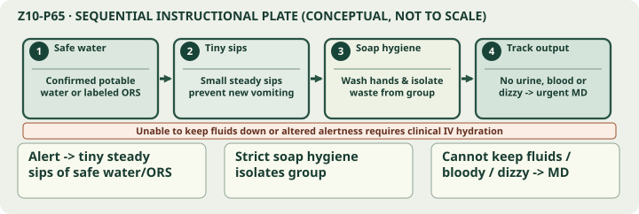

Z10-P65 · Wilderness medicine · New manuscript
Manage dehydration, diarrhea, and vomiting with small-sip oral rehydration
Maintain safe hydration during gastrointestinal illness or heat loss and catch severe dehydration red flags before collapse.
When it applies · Traveler's diarrhea, vomiting, heat exertion, or inadequate drinking-water intake during backcountry or outage events.
Equipment · Confirmed potable drinking water, labeled commercial oral rehydration salts (ORS) if carried, clean cup, and strict hand hygiene.

Actions
- For alert patients able to swallow, offer frequent tiny sips (a spoonful or small sip every few minutes) of confirmed potable water or commercial labeled oral rehydration solution—gulping large volumes rapidly often triggers renewed vomiting.[M17, W29]
- Enforce strict caregiver and patient handwashing with soap and safe water plus isolated waste containment to stop fecal-oral gastrointestinal illness from disabling the entire group.[F01, W29, U13]
- Evacuate promptly for medical care if vomiting prevents keeping fluids down over hours, stools contain blood or black tar, high fever develops, urine stops or turns very dark, or dizziness/confusion appear.[M17, M05, T02]
Failure recognition · Drinking large cold gulps rapidly while nauseated (worsening vomiting) or ignoring zero urination and confusion in a child or older adult.[M17]
Verify · Confirm fluids are confirmed potable, sips stay down steadily, urine output/color is tracked, and hand hygiene isolates the group.[M17, F01, W29]
Stop or change course · Inability to hold fluids down, bloody diarrhea, sunken eyes, fainting, or altered mental status require urgent clinical IV rehydration.[M17, T02]
Evidence and editorial notes
- F01 · USDA / FDA / CDC · Four Steps to Food Safety (current web edition)
- Section: Clean and Separate · Conditions: Food preparation with safe water and surfaces
Support: Wash hands and separate raw animal foods and juices from ready-to-eat food.
Limitations: Requires safe water or approved hand hygiene substitutes in outages. · Conflicting evidence: None; retained for food safety pack completeness.
Editorial note: Maintains five-pack integrity. · Specialist reviewer: Food safety and public health
Primary source · checked 2026-11-24 - M05 · NIH / MedlinePlus · Shock (current web edition)
- Section: Recognizing Circulatory Shock and Positioning · Conditions: Injured or ill patient with pale cool clammy skin, rapid weak pulse, confusion, or dizziness
Support: Treat suspected shock as a life-threatening emergency: call 911, control external bleeding, keep the person warm and insulated from cold ground, and do not give food or drink.
Limitations: Field responders cannot diagnose internal hemorrhage or administer IV fluids. · Conflicting evidence: None; reinforces keeping suspected shock patients NPO and warm.
Editorial note: Core shock recognition and stabilization boundary in Z10. · Specialist reviewer: Emergency and wilderness medicine
Primary source · checked 2026-11-24 - M17 · NIH / MedlinePlus · Dehydration (current web edition)
- Section: Dehydration Recognition, Oral Rehydration, and Red Flags · Conditions: Heat exertion, prolonged diarrhea, vomiting, or inadequate water intake
Support: Encourage small frequent sips of safe potable water or labeled oral rehydration solution in alert patients able to swallow; evacuate urgently for confusion, inability to keep fluids down, sunken eyes, or minimal dark urine.
Limitations: Severely dehydrated or altered patients cannot safely rehydrate by mouth alone. · Conflicting evidence: None; avoids unverified homemade salt-sugar ratio guesswork when labeled packets exist.
Editorial note: Links hydration monitoring to medical evacuation triggers. · Specialist reviewer: Wilderness medicine and internal medicine
Primary source · checked 2026-11-24 - T02 · American Red Cross · First Aid Steps (current web edition)
- Section: First Aid Steps > Call 9-1-1 · Conditions: Lay emergency response to unresponsiveness, abnormal breathing or severe bleeding
Support: Activate EMS and get needed equipment. Follow dispatcher directions and act within training.
Limitations: Remote locations may delay EMS arrival, requiring sustained stabilization after activation. · Conflicting evidence: None; aligns with NPS-E.
Editorial note: Mandates early emergency activation and dispatcher adherence. · Specialist reviewer: EMS and wilderness medicine
Primary source · checked 2026-11-24 - U13 · CDC · How to Make Water Safe in an Emergency (2024-09-19)
- Section: Sanitation, Hand Hygiene, and Emergency Waste Containment · Conditions: Household water-service or sewer interruption
Support: Maintain separate handwashing stations using safe water and soap (or alcohol hand rub when hands are not visibly soiled), line emergency bucket toilets with heavy bags and tight lids when sewer service is unusable, and never mix bleach with ammonia or acids.
Limitations: Improvised sanitation is a temporary containment bridge until municipal sewer or licensed sanitation resumes; follow local health department disposal orders. · Conflicting evidence: None; prevents fecal-oral outbreaks and toxic chloramine gas mixing.
Editorial note: Core household sanitation and chemical-mixing boundary in Z13. · Specialist reviewer: Environmental health and sanitation specialist
Primary source · checked 2026-11-24 - W29 · CDC · How to Make Water Safe in an Emergency (2024-09-19)
- Section: Boil > Safe Water for Infants, Wounds, and Hygiene · Conditions: Emergency hygiene, wound rinsing, and infant formula preparation under water advisories
Support: Use confirmed potable or properly boiled-and-cooled water for brushing teeth, washing produce, cleaning wounds, and mixing infant formula; avoid untreated water for food-contact utensils.
Limitations: Do-not-use advisories may also prohibit skin contact or bathing depending on contaminant. · Conflicting evidence: None; extends drinking safety to hygiene and preparation boundaries.
Editorial note: Separates potable-required tasks from non-potable utility uses. · Specialist reviewer: Public health and wilderness medicine
Primary source · checked 2026-11-24
Source lineage · NIH MedlinePlus Dehydration and CDC Safe Water; new manuscript · Classification · New manuscript.